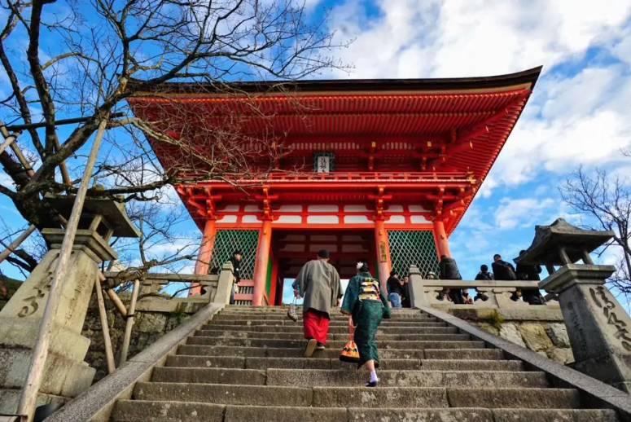
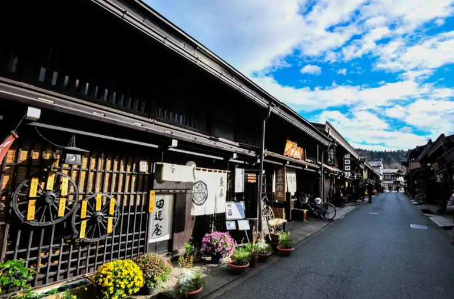
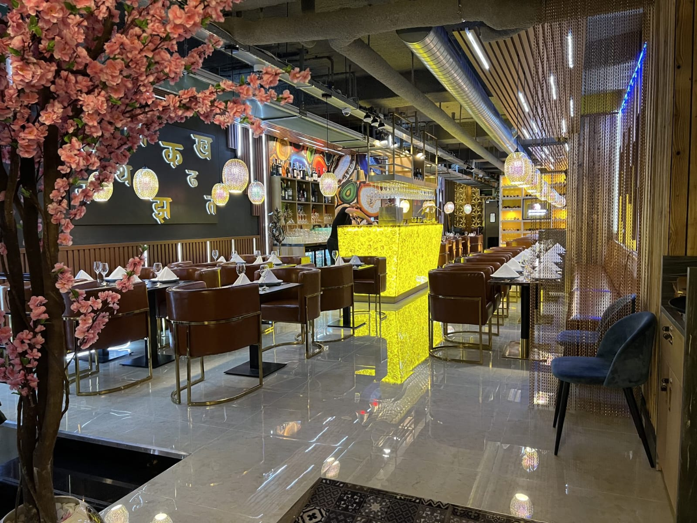

Japão
O Japão é um país fascinante que combina tradições antigas com inovação moderna. Com a sua cultura rica e paisagens deslumbrantes, o Japão oferece uma experiência única aos seus visitantes. Vamos explorar alguns dos pontos turísticos mais famosos deste país cativante.
Tóquio, a capital do Japão, é uma metrópole dinâmica e cosmopolita que cativa os viajantes com sua mistura de tradição e modernidade. A Torre de Tóquio e o Palácio Imperial também são locais populares para visitar.
Kyoto é uma cidade que evoca a essência tradicional do Japão. Repleta de templos e santuários, é um tesouro cultural. O Templo Kinkaku-ji, também conhecido como Pavilhão Dourado, é um destino imperdível.
Nara é outra cidade que oferece uma imersão na história e cultura do Japão. O Parque Nara abriga uma população amigável de cervos sagrados que podem ser alimentados pelos visitantes.

Kiyomizu-dera Niomon Gate

Takayama

Restaurant Den Haag